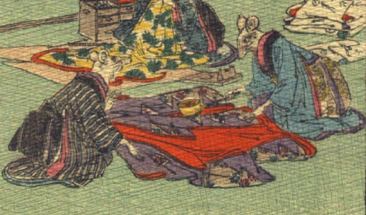

2体の鼠。いずれも女と思われる。画面右の鼠は青い色の着物を、左の鼠は藍色の縞模様の着物を身につけている。ともに座って向かい合っており、その間に紫色の着物が置かれている。右の鼠は片手に持った火のしを、その着物に当てている。左の鼠は、それに対して、話しかけているようである。いずれも手は人間のものである。
著作者：J.Dautremer／出典：親書誌：U426_nichibunken_0111：Le mariage de la souris／日付：2006／資源識別子：U426_nichibunken_0111_0005_0003
Copyright (c)2010- International Research Center for Japanese Studies, Kyoto, Japan. All rights reserved.